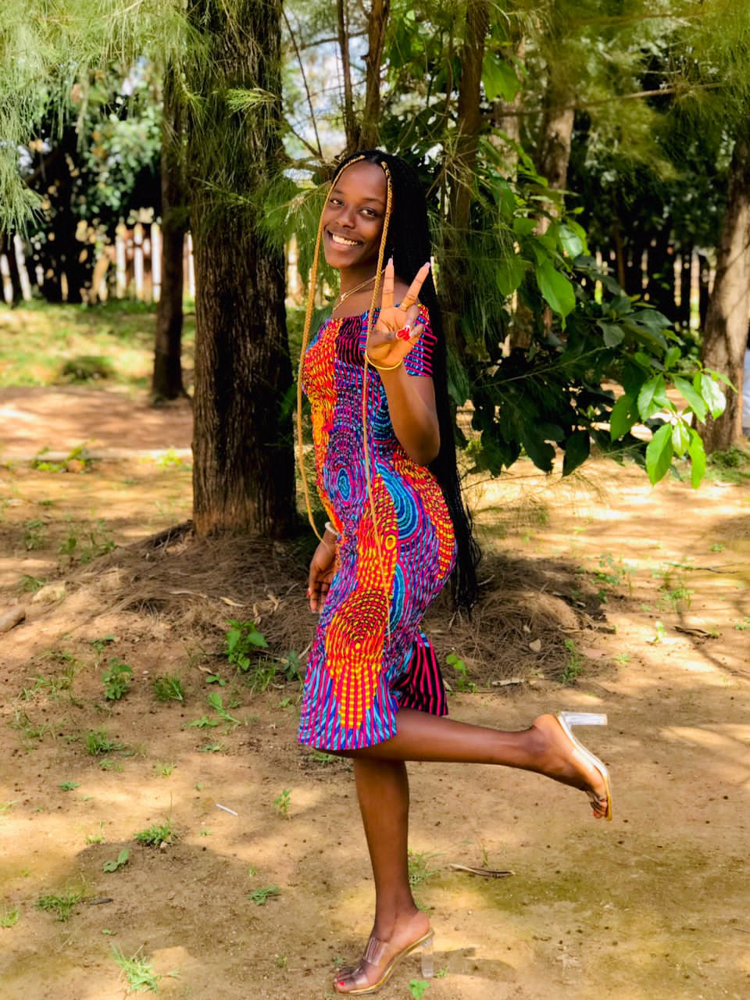
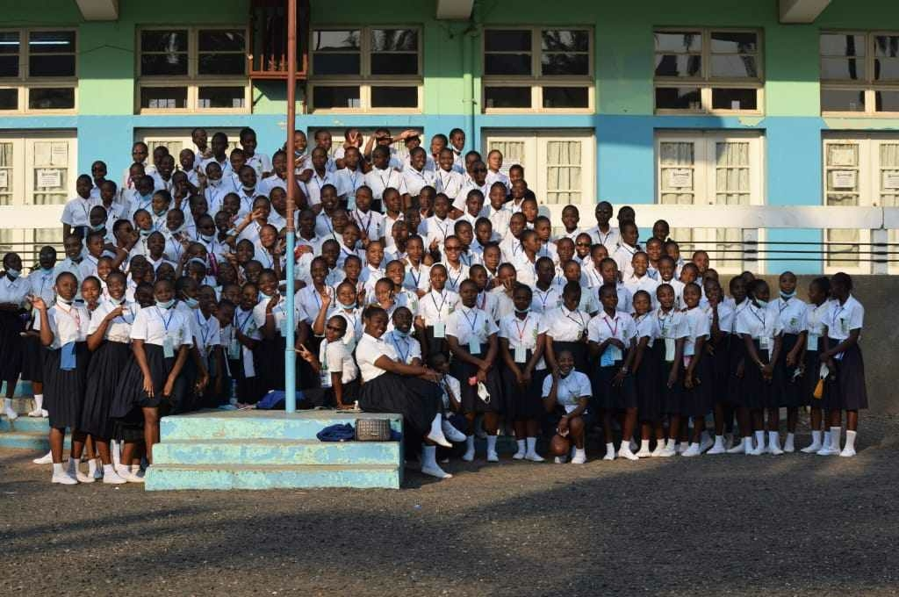
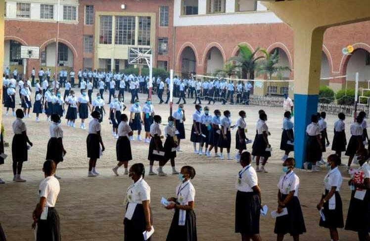
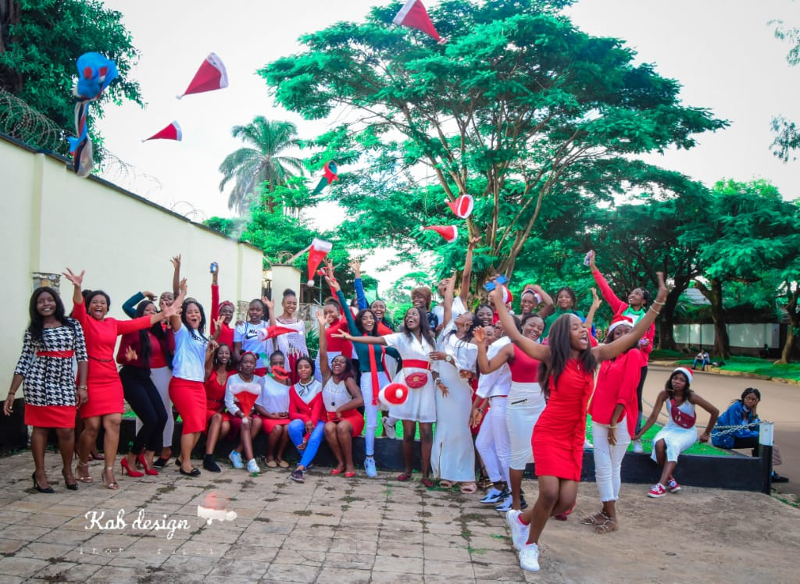
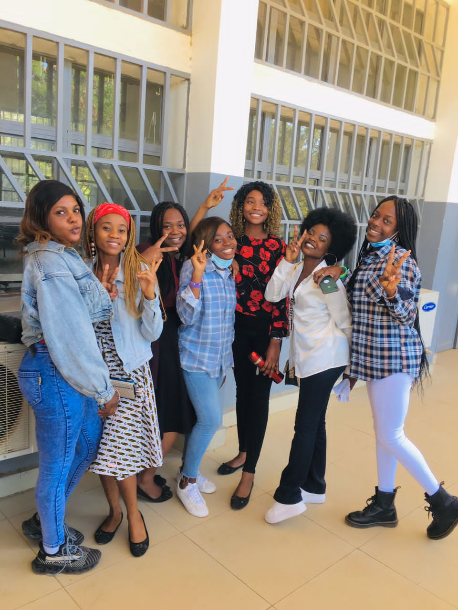
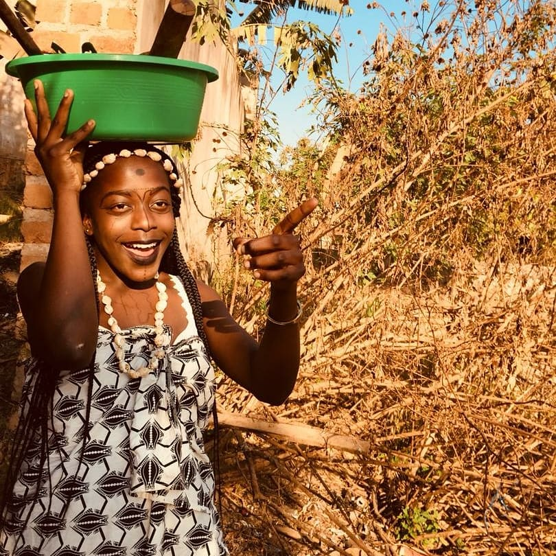

Présentation

Je répond au nom de WINI alias HARPEUR, fille de Willy Mashind et de Nicole Karumb ;
je suis tanzanienne d'origine congolaise née le 15/04 d'une certaine année dans une famille de trois enfants dont je suis la troisième et la fille unique
Une famille que je n'ai pas choisi mais dont je ne cesserai de remercier le bon Dieu de m'avoir donné une famille aussi géniale.
J'ai passé toute mon enfance en Tanzanie plus précisement dans la ville de kigoma ;
C'est ne qu'après quelques années que ma famille et moi avions décidé de vivre en RDC dans la ville de Lubumbashi ,
une nouvelle vie dans un nouveau milieu , résident dans le quartier golf lido .
Il n'a pas été facile pour nous de quitter la ville natale mais avec le temp nous avons surmonter ce changement de milieu ,
et nous voici jusq'à présent toujours en RDC ou une grande partie de ma famille élargie s'y trouve et nous sommes très
heureux de vivre ensemble dans l'unité.
Mon parcours scolaire et académique

Comme dit précedemment , j'ai passé une partie de mon enfance dans un pays autre que celui ci , ainsi pour mes études primaires;
une partie a été faite en TANZANIE dans une école francophone et une autre en RDC dans un collège nommé SALEME;
une école caractérisée par la formation de l'homme dans l'homme .
En ce qui concerne mes études humanitaires , je les ai passées dans un très beau et grand lycée connu sous le nom de Lycée TUENDELEE
une école salésienne basée sur la discipline et le progrès ; un lycée ou j'ai obtenu mon dipmlome d'état en latin philo après six ans de dure labeur.

La derniére année au lycée TUENDELEE a été une année très compliquée suite à la pandémie mondiale CORONA;
Ainsi nous avons fait face à beaucoup des difficultés telles que le confinement , la grève,...une année qui semblait n'est pas s'achever
car elle était très élastique à cause du confinement. Mais Dieu aidant nous avons vaincu et après 12 mois d'années scolaire nous avons enfin
obtenus nos dipmlomes d'état en 2019 et nous rendons gloire à Dieu .

Certes une année trop stressante , une année remplie de découragements,une année exceptionnelle bref une année très compliquée...
Mais malgré tous les obstacles rencontrés au cours de cette année , rien n'a empeché que nous passions des moments inoubliables
remplis des fous rires et des souvenirs qui seront toujours gravés au fond de tout un chacun car les beaux moments sont ceux que nous
avions passés en sixième tous unis avec la force .

Après obtention de mon diplome, j'ai du continuer mes études universitaire dans une institution salésienne connu sous le nom
d'ESIS (Ecole Supérieure D'informatique Salama) une école qui vise un métier , une institution ou j'aspire devenir ingénieure
en informatique dans quatre ans .
Mon niveau intellectuel est le fruit de l'éducation recue durant mon parcours scolaire et académique et j'en serais toujours très fière ;
Car on dit: "L'important n'est pas ce qu'on a fait de l'homme , mais ce que l'homme fait de ce qu'on a fait de lui " .
Ma passion

En plus d'etre passionnée par l'informatque ; Le théatre mon bel art , l'une de mes meilleures activités dont je suis très passionnée .
J'ai joué dans plusieurs pièces de théatres à la maison SAFINA, à la halle de l'étoile,...C'est ainsi qu'en 2020 à un concours j'ai remporté le prix de meilleure actrice de l'année .
Ma vie chrétienne
Je suis jeune chrétienne METHODISTE , une religion que je n'ai pas choisie mais dont j'en serais toujours fière ;
Je suis de la paroisse JESUSALEM ou je suis très dévouée au service de Dieu surtout très assidue au temple .
Je suis membre de la JPC (Jeunesse Pour Christ) qui est une partie intégrante de l'église
ou je suis une bonne voix pour ma chorale.